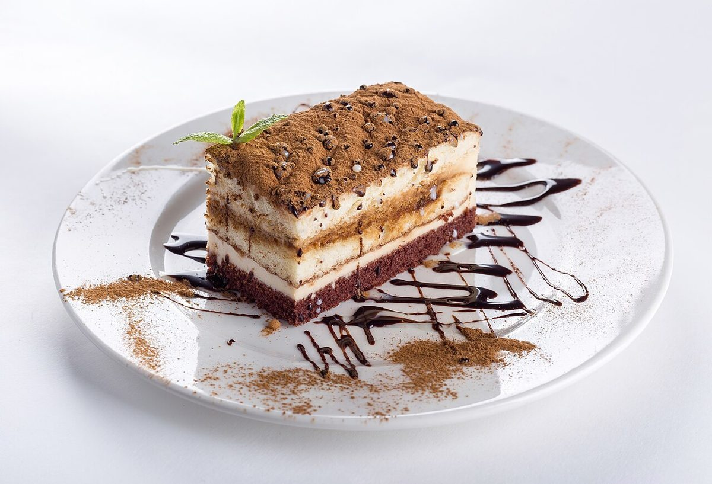
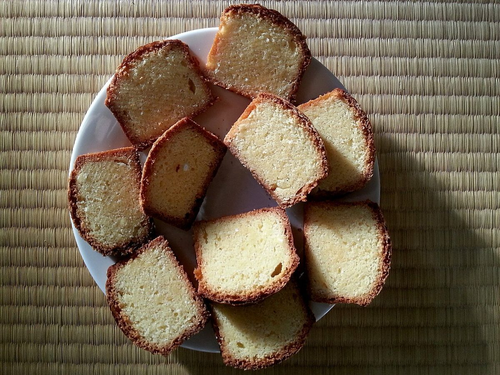
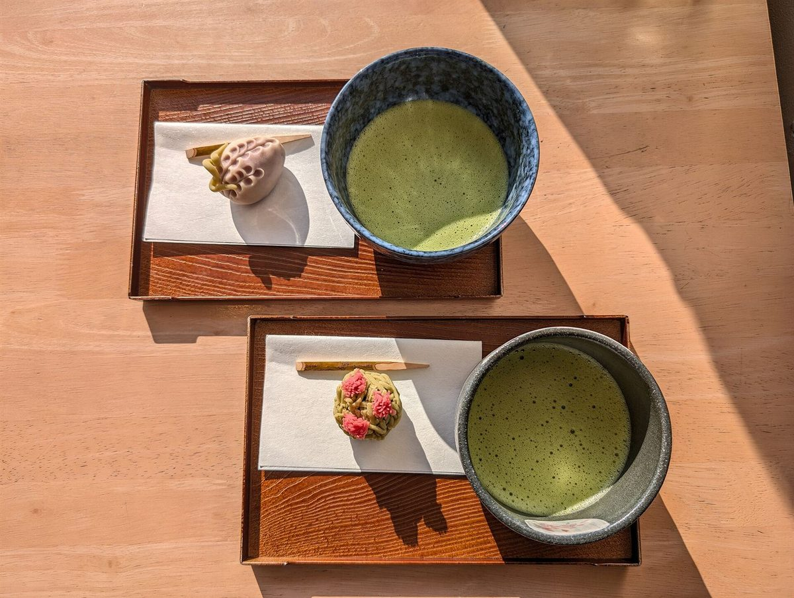
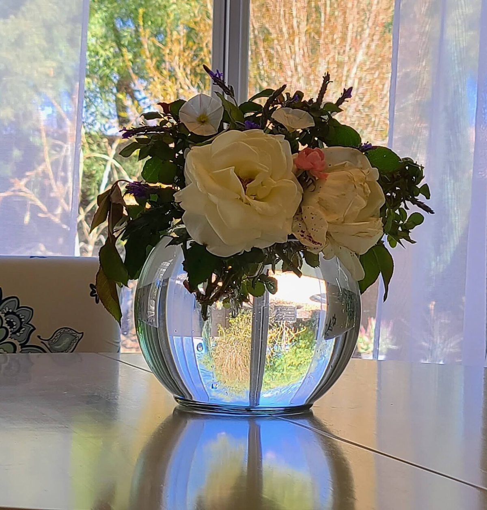
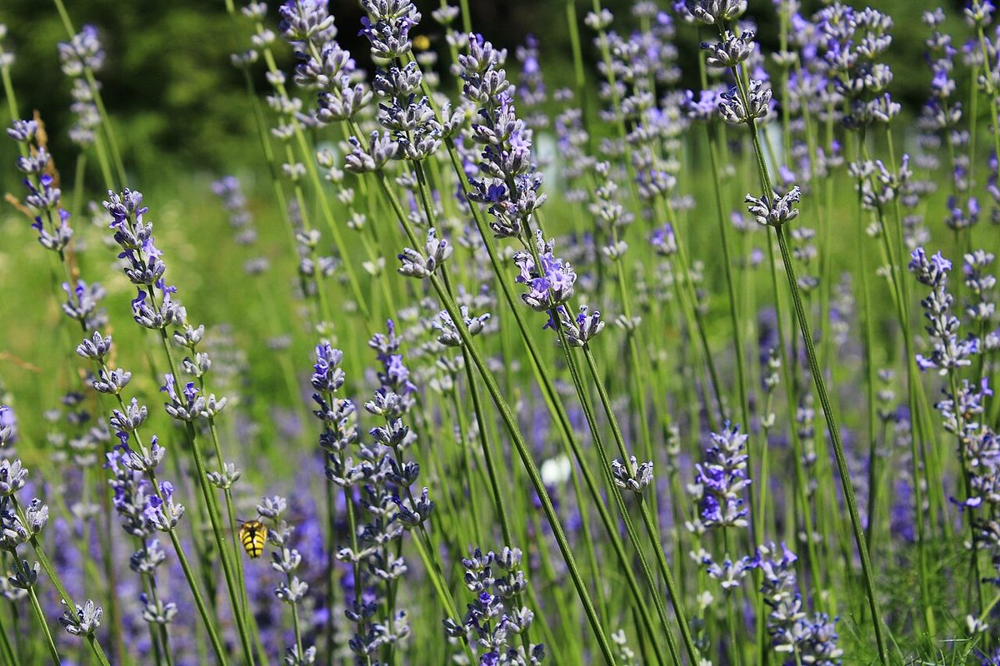

結城市上山川 ・ シフォンケーキ
ママンズシフォンやさしく、ふんわりとした時間を
茨城県結城市のシフォンケーキのお店「ママンズシフォン」の紹介ページ(試作)です。商品や営業のくわしい情報は準備中です。ご質問はお電話またはInstagramからどうぞ。

 イメージ写真
イメージ写真
コンセプト案制作側の案です
お店の名前から受ける印象をもとに、制作側で「やさしい」「ふんわり」「手づくりの時間」という言葉を軸にしたデザインを考えました。お店の理念や名前の由来を示すものではありません。実際の想いは、ぜひお店にお尋ねください。
※ このコンセプトは制作側の案です。ご店主さまのご意向に合わせて変更できます。
写真でイメージする、やさしい空気





お店のご案内
- 店名
- ママンズシフォン
- 所在地
- 〒307-0021 茨城県結城市上山川4193
- mamans.chiffon2
- 営業時間
- 準備中(お問い合わせください)
- 定休日
- 準備中(お問い合わせください)